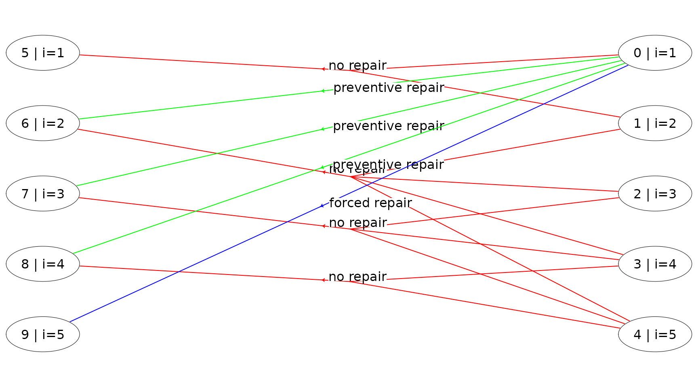
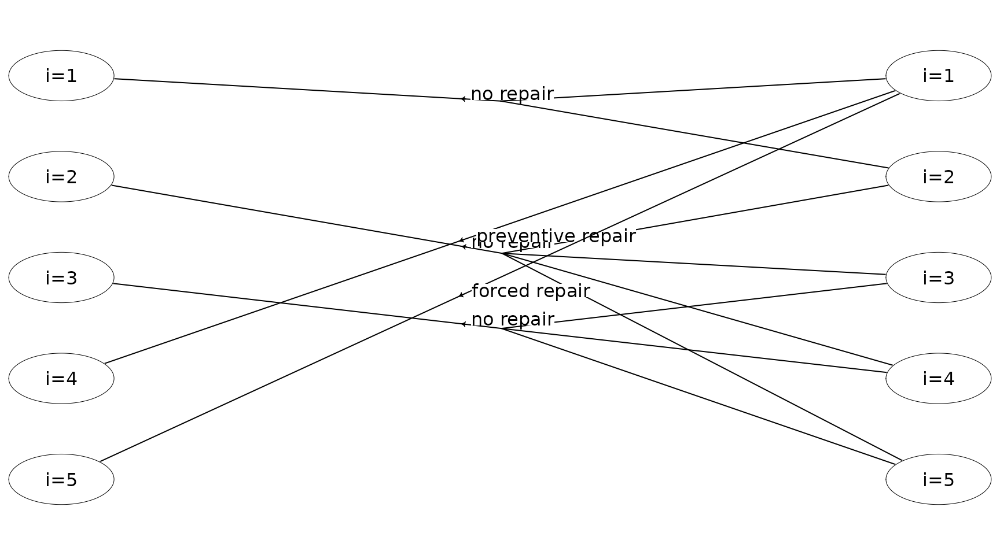
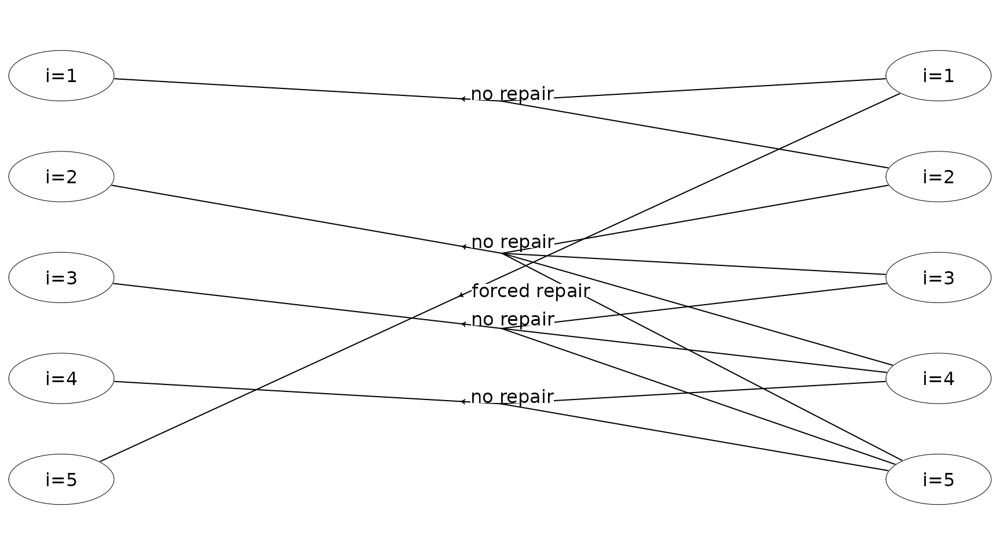

Solving an infinite-horizon semi-MDP
Lars Relund lars@relund.dk
2026-05-08
Source:vignettes/infinite-mdp.Rmd
infinite-mdp.RmdThe MDP2 package in R is a package for solving Markov
decision processes (MDPs) with discrete time-steps, states and actions.
Both traditional MDPs (Puterman 1994),
semi-Markov decision processes (semi-MDPs) (Tijms
2003) and hierarchical-MDPs (HMDPs) (Kristensen and Jørgensen 2000) can be solved
under a finite and infinite time-horizon.
The package implement well-known algorithms such as policy iteration
and value iteration under different criteria e.g. average reward per
time unit and expected total discounted reward. The model is stored
using an underlying data structure based on the state-expanded
directed hypergraph of the MDP (Nielsen and
Kristensen (2006)) implemented in C++ for fast
running times.
Building and solving an MDP is done in two steps. First, the MDP is built and saved in a set of binary files. Next, you load the MDP into memory from the binary files and apply various algorithms to the model.
For building the MDP models see vignette("building"). In
this vignette we focus on the second step, i.e. finding the optimal
policy. Here we consider an infinite semi-MDP.
An infinite-horizon semi-MDP
An infinite-horizon semi-MDP considers a sequential decision problem over an infinite number of stages. Let denote the finite set of system states at stage . Note we assume that the semi-MDP is homogeneous, i.e the state space is independent of stage number. When state is observed, an action from the finite set of allowable actions must be chosen which generates reward . Moreover, let denote the stage length of action , i.e. the expected time until the next decision epoch (stage ) given action and state . Finally, let denote the transition probability of obtaining state at stage given that action is chosen in state at stage . A policy is a decision rule/function that assigns to each state in the process an action.
Example
Let us consider example 6.1.1 in Tijms (2003). At the beginning of each day a piece of equipment is inspected to reveal its actual working condition. The equipment will be found in one of the working conditions where the working condition is better than the working condition . The equipment deteriorates in time. If the present working condition is and no repair is done, then at the beginning of the next day the equipment has working condition with probability . It is assumed that for and . The working condition represents a malfunction that requires an enforced repair taking two days. For the intermediate states with there is a choice between preventively repairing the equipment and letting the equipment operate for the present day. A preventive repair takes only one day. A repaired system has the working condition . The cost of an enforced repair upon failure is and the cost of a preemptive repair in working condition is . We wish to determine a maintenance rule which minimizes the long-run average repair cost per day.
To formulate this problem as an infinite horizon semi-MDP the set of possible states of the system is chosen as State corresponds to the situation in which an inspection reveals working condition . Define actions The set of possible actions in state is chosen as for . The one-step transition probabilities are given by for , for , and zero otherwise. The one-step costs are given by and . The stage length until next decision epoch are and .
Assume that the number of possible working conditions equals . The repair costs are given by and . The deterioration probabilities are given by
| 1 | 2 | 3 | 4 | 5 | |
|---|---|---|---|---|---|
| 1 | 0.9 | 0.1 | 0.0 | 0.00 | 0.00 |
| 2 | 0.0 | 0.8 | 0.1 | 0.05 | 0.05 |
| 3 | 0.0 | 0.0 | 0.7 | 0.10 | 0.20 |
| 4 | 0.0 | 0.0 | 0.0 | 0.50 | 0.50 |
For building and saving the model see the
vignette("building"). We load the model using
prefix <- paste0(system.file("models", package = "MDP2"), "/hct611-1_")
mdp <- loadMDP(prefix)#> Read binary files (0.000129043 sec.)
#> Build the HMDP (2.3795e-05 sec.)#> Checking MDP and found no errors (7.41e-07 sec.)The variable mdp is a list with a pointer to the MDP
object stored in memory.
mdp#> $binNames
#> [1] "/home/runner/work/_temp/Library/MDP2/models/hct611-1_stateIdx.bin"
#> [2] "/home/runner/work/_temp/Library/MDP2/models/hct611-1_stateIdxLbl.bin"
#> [3] "/home/runner/work/_temp/Library/MDP2/models/hct611-1_actionIdx.bin"
#> [4] "/home/runner/work/_temp/Library/MDP2/models/hct611-1_actionIdxLbl.bin"
#> [5] "/home/runner/work/_temp/Library/MDP2/models/hct611-1_actionWeight.bin"
#> [6] "/home/runner/work/_temp/Library/MDP2/models/hct611-1_actionWeightLbl.bin"
#> [7] "/home/runner/work/_temp/Library/MDP2/models/hct611-1_transProb.bin"
#> [8] "/home/runner/work/_temp/Library/MDP2/models/hct611-1_externalProcesses.bin"
#>
#> $timeHorizon
#> [1] Inf
#>
#> $states
#> [1] 5
#>
#> $founderStatesLast
#> [1] 5
#>
#> $actions
#> [1] 8
#>
#> $levels
#> [1] 1
#>
#> $weightNames
#> [1] "Duration" "Net reward"
#>
#> $ptr
#> C++ object <0x55638f73f510> of class 'HMDP' <0x556389c642c0>
#>
#> attr(,"class")
#> [1] "HMDP" "list"For instance the total number of actions is 8 and the model use two
weights applied to each action “Duration” and “Net reward”. Information
about the MDP can be retrieved using getInfo():
getInfo(mdp, withList = F, dfLevel = "action", asStringsActions = TRUE) #> $df
#> # A tibble: 8 × 8
#> sId stateStr label aIdx label_action weights trans pr
#> <dbl> <chr> <chr> <dbl> <chr> <chr> <chr> <chr>
#> 1 5 0,0 i=1 0 no repair 1,0 0,1 0.9,0.1
#> 2 6 0,1 i=2 0 no repair 1,0 1,2,3,4 0.8,0.1,0.05,0.05
#> 3 6 0,1 i=2 1 preventive repair 1,-7 0 1
#> 4 7 0,2 i=3 0 no repair 1,0 2,3,4 0.7,0.1,0.2
#> 5 7 0,2 i=3 1 preventive repair 1,-7 0 1
#> 6 8 0,3 i=4 0 no repair 1,0 3,4 0.5,0.5
#> 7 8 0,3 i=4 1 preventive repair 1,-5 0 1
#> 8 9 0,4 i=5 0 forced repair 2,-10 0 1Here the tibble has a row for each state and action. For instance the weight “Duration” equals 1 day except in state where a forced repair takes 2 days (row 13). States with no actions are also given.
The state-expanded hypergraph representing the semi-MDP with infinite time-horizon can be plotted using
plot(mdp, hyperarcColor = "label", nodeLabel = "sId:label")
Each node corresponds to a specific state in the MDP and is a
unique id (sId) such that you can identify all the
states (id always start from zero). These ids are not
equal to the ids used when you built the model, since the order of the
nodes in the hypergraph data structure is optimized! A directed hyperarc
is defined for each possible action. For instance, the state/node with
sId = 6 corresponds to working condition
and the two hyperarcs with head in this node corresponds to the two
actions preventive and no repair. Note the tails of a hyperarc represent
a possible transition
().
Given the model in memory, we now can find the optimal policy under various policies. Let us first try to optimize the average reward per time unit.
runPolicyIteAve(mdp,"Net reward","Duration")#> Run policy iteration under average reward criterion using
#> reward 'Net reward' over 'Duration'. Iterations (g):
#> 1 (-0.512821) 2 (-0.446154) 3 (-0.43379) 4 (-0.43379) finished. Cpu time: 7.41e-07 sec.#> [1] -0.43379
getPolicy(mdp)#> # A tibble: 5 × 6
#> sId stateStr stateLabel aIdx actionLabel weight
#> <dbl> <chr> <chr> <int> <chr> <dbl>
#> 1 5 0,0 i=1 0 no repair 9.13
#> 2 6 0,1 i=2 0 no repair 4.79
#> 3 7 0,2 i=3 0 no repair 2.97
#> 4 8 0,3 i=4 1 preventive repair 4.57
#> 5 9 0,4 i=5 0 forced repair 0
plot(mdp, hyperarcShow = "policy")
Note it is optimal to do a preventive repair in state . Let us try to optimize the expected total discounted reward with a discount factor of 0.5 using policy iteration:
runPolicyIteDiscount(mdp,"Net reward","Duration", discountFactor = 0.5)#> Run policy iteration using quantity 'Net reward' under discounting criterion
#> with 'Duration' as duration using discount factor 0.5.
#> Iteration(s): 1 2 finished. Cpu time: 7.41e-07 sec.
getPolicy(mdp)#> # A tibble: 5 × 6
#> sId stateStr stateLabel aIdx actionLabel weight
#> <dbl> <chr> <chr> <int> <chr> <dbl>
#> 1 5 0,0 i=1 0 no repair -0.0642
#> 2 6 0,1 i=2 0 no repair -0.706
#> 3 7 0,2 i=3 0 no repair -1.80
#> 4 8 0,3 i=4 0 no repair -3.34
#> 5 9 0,4 i=5 0 forced repair -10.0
plot(mdp, hyperarcShow = "policy")
Note given a discount factor of 0.5, it is optimal to not do a preventive repair in state . The same results can be found using value iteration:
runValueIte(mdp,"Net reward","Duration", discountFactor = 0.5, eps = 1e-10, maxIte = 1000)#> Run value iteration with epsilon = 1e-10 at most 1000 time(s)
#> using quantity 'Net reward' under expected discounted reward criterion
#> with 'Duration' as duration using discount factor 0.5.
#> Iterations: 33 Finished. Cpu time 1.7757e-05 sec.
getPolicy(mdp)#> # A tibble: 5 × 6
#> sId stateStr stateLabel aIdx actionLabel weight
#> <dbl> <chr> <chr> <int> <chr> <dbl>
#> 1 5 0,0 i=1 0 no repair -0.0642
#> 2 6 0,1 i=2 0 no repair -0.706
#> 3 7 0,2 i=3 0 no repair -1.80
#> 4 8 0,3 i=4 0 no repair -3.34
#> 5 9 0,4 i=5 0 forced repair -10.0